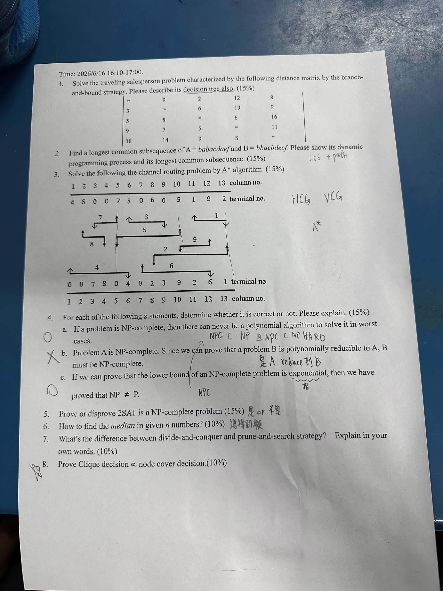
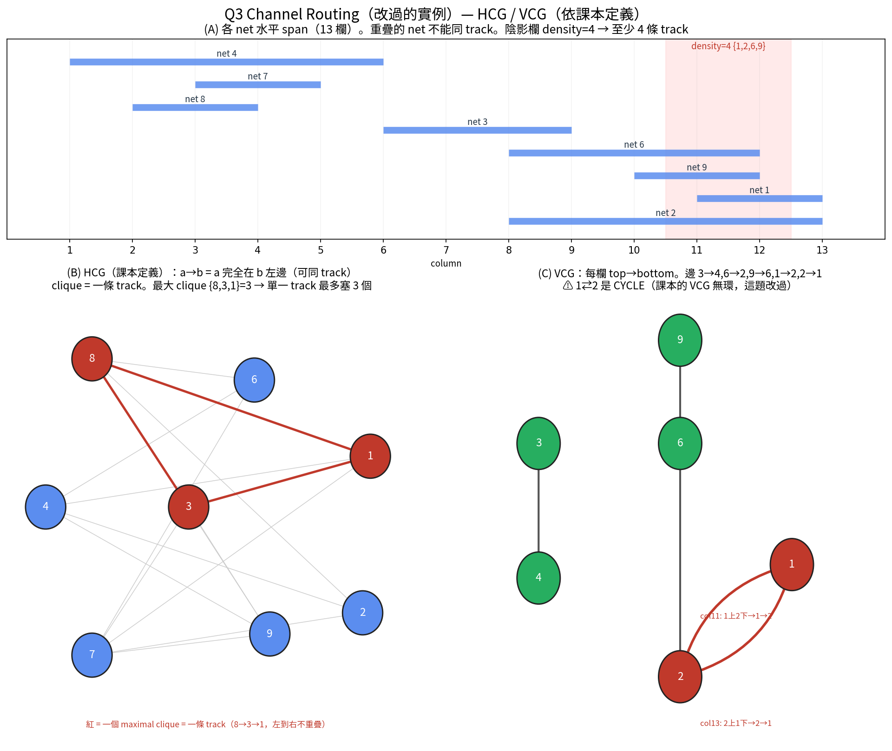
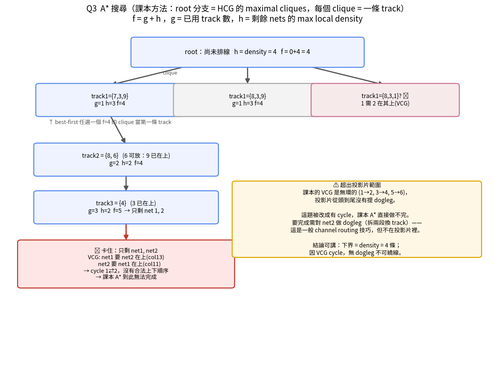

考卷原圖（2026/6/16）
距離矩陣（5 城，對角線 ∞）：
1 2 3 4 5 1 ∞ 9 2 12 8 2 3 ∞ 6 19 9 3 5 8 ∞ 6 16 4 9 7 5 ∞ 11 5 18 14 9 8 ∞
① reduce 矩陣 → 下界。每列減最小值（2,3,5,5,8），再每行減最小值（0,2,0,0,6）：
列減 2+3+5+5+8 = 23 ，行減 0+2+0+0+6 = 8 root 下界 = 23 + 8 = 31 reduced matrix: ∞ 5 0 10 0 0 ∞ 3 16 0 0 1 ∞ 1 5 4 0 0 ∞ 0 10 4 1 0 ∞
② decision tree（branch on include/exclude an arc）。挑「exclusion penalty 最大」的 0 格當分裂弧。各 0 格 penalty = (同列其他最小) + (同行其他最小)。最大的是弧 5→4，penalty = 1+1 = 2：
All tours (LB=31)
/ \
include 5-4 (LB=31) exclude 5-4 (LB=31+2=33)
|
沿最小下界往下展開 (best-first)，
再 include 1-5, 4-3, 3-2 … 收斂
best-first（“best-fit”）節點選擇規則 —— 這就是 branch-and-bound 怎麼挑下一個展開誰：
1. 每個活節點(live node)都帶一個 lower bound。
2. 永遠展開「lower bound 最小」的那個活節點（= 最有希望的）。
3. 展開 = 對它的分裂弧 (i→j) 造兩個子節點：
include i-j：刪 row i、col j，設 (j,i)=∞ 防 subtour，重 reduce，更新 bound
exclude i-j：設 (i,j)=∞，重 reduce，更新 bound（bound 上升 = 該弧 penalty）
4. 一旦某活節點 bound ≥ 目前最佳完整 tour (incumbent) → prune，不展開。
5. 當「被選中要展開的節點」本身已是完整 tour → 它保證是最佳解，停。
選分裂弧的規則：在 reduced matrix 的 0 格裡，挑「exclusion penalty 最大」那個（penalty = 同列其他最小 + 同行其他最小）——排除它會把下界推最高，最快縮小搜尋。
③ 最佳解（brute-force 驗證，唯一最佳，次佳=33）：
最佳 tour: 1 → 5 → 4 → 3 → 2 → 1 成本 : 8 + 8 + 5 + 8 + 3 = 32
A = b a b a c d a e f，B = b b a e b d e c f。DP：L[i][j]=L[i-1][j-1]+1（字元相同）否則 max(L[i-1][j], L[i][j-1])。
| · | b | b | a | e | b | d | e | c | f | |
|---|---|---|---|---|---|---|---|---|---|---|
| · | 0 | 0 | 0 | 0 | 0 | 0 | 0 | 0 | 0 | 0 |
| b | 0 | 1 | 1 | 1 | 1 | 1 | 1 | 1 | 1 | 1 |
| a | 0 | 1 | 1 | 2 | 2 | 2 | 2 | 2 | 2 | 2 |
| b | 0 | 1 | 2 | 2 | 2 | 3 | 3 | 3 | 3 | 3 |
| a | 0 | 1 | 2 | 3 | 3 | 3 | 3 | 3 | 3 | 3 |
| c | 0 | 1 | 2 | 3 | 3 | 3 | 3 | 3 | 4 | 4 |
| d | 0 | 1 | 2 | 3 | 3 | 3 | 4 | 4 | 4 | 4 |
| a | 0 | 1 | 2 | 3 | 3 | 3 | 4 | 4 | 4 | 4 |
| e | 0 | 1 | 2 | 3 | 4 | 4 | 4 | 5 | 5 | 5 |
| f | 0 | 1 | 2 | 3 | 4 | 4 | 4 | 5 | 5 | 6 |
LCS 長度 = 6，一條 LCS = b a b d e f（另一條合法答案 bbadef 也對）。
Trace-back 過程（同一張表上畫路線）。從右下角 L[9][9] 出發：字元相同就斜走到左上、並記下那個字元（金格）；不同就往「上或左較大的那一格」走（淺色）。金格由上到下收集 = b a b d e f。
| · | b | b | a | e | b | d | e | c | f | |
|---|---|---|---|---|---|---|---|---|---|---|
| · | 0 | 0 | 0 | 0 | 0 | 0 | 0 | 0 | 0 | 0 |
| b | 0 | 1 | 1 | 1 | 1 | 1 | 1 | 1 | 1 | 1 |
| a | 0 | 1 | 1 | 2 | 2 | 2 | 2 | 2 | 2 | 2 |
| b | 0 | 1 | 2 | 2 | 2 | 3 | 3 | 3 | 3 | 3 |
| a | 0 | 1 | 2 | 3 | 3 | 3 | 3 | 3 | 3 | 3 |
| c | 0 | 1 | 2 | 3 | 3 | 3 | 3 | 3 | 4 | 4 |
| d | 0 | 1 | 2 | 3 | 3 | 3 | 4 | 4 | 4 | 4 |
| a | 0 | 1 | 2 | 3 | 3 | 3 | 4 | 4 | 4 | 4 |
| e | 0 | 1 | 2 | 3 | 4 | 4 | 4 | 5 | 5 | 5 |
| f | 0 | 1 | 2 | 3 | 4 | 4 | 4 | 5 | 5 | 6 |
金格 6 個（=LCS 長度）：(b,col b)→(a,col a)→(b,col b)→(d,col d)→(e,col e)→(f,col f）。遇平手（上=左）時往上走，這裡兩條路徑分別給 babdef / bbadef。
驗證 babdef: A 位置: b(1) a(2) b(3) d(6) e(8) f(9) 遞增 ✓ B 位置: b(1) a(3) b(5) d(6) e(7) f(9) 遞增 ✓
13 欄的終端（已逐欄核對原圖，並用 subagent 重讀驗證）：
col : 1 2 3 4 5 6 7 8 9 10 11 12 13 top : 4 8 0 0 7 3 0 6 0 5 1 9 2 bot : 0 0 7 8 0 4 0 2 3 9 2 6 1
每個 net 的終端欄 → 水平 span：
net1[11,13] net2[8,13] net3[6,9] net4[1,6] net6[8,12] net7[3,5] net8[2,4] net9[10,12] net5 = 單一終端(col10) → 沒有水平線、可略
HCG（水平限制）+ VCG（垂直限制）：

a→b = 「a 完全在 b 左邊，可以同 track（a 在左）」。一個 clique = 一條 track（裡面的 net 兩兩不重疊）。本題最大 clique 例如 {8,3,1}，size 3 → 單一 track 最多塞 3 個 net。h。所以 至少 4 條 track。A* track-assignment 搜尋（f = g + h，g = 已用 track 數，h = 剩餘 nets 的 max local density，是 admissible 下界）：

課本的 A* 怎麼跑（Fig 6-46/6-48）：root 的子節點 = HCG 的各個 maximal clique（每個 clique = 候選的第一條 track），但要符合 VCG（一條 track 只能放「沒有別的 net 一定要在它上面、且那些 net 還沒排」的 net）。g = 已用 track 數，h = 剩餘 nets 的 max local density，展開 f=g+h 最小的節點。
本題 A* 先排 {7,3,9} → {8,6} → {4}（f 一路 4），剩 net1、net2 時撞上 VCG cycle 死結（兩個互相要在對方上面）→ 課本 A* 到此做不完。要完成必須 dogleg net2（投影片外），補一條 track → 5 條 track；下界 density 仍是 4。
f = g + h（g=已用 track，h=剩餘 density），展開 f 最小的。關鍵：我發現 VCG 有 cycle 1⇄2（col11 跟 col13 順序相反）——這跟課本不一樣，課本 VCG 無環、也沒教 dogleg。所以老實說，純課本 A* 在這裡會卡住；要排完得對 net2 做 dogleg（一般 channel routing 技巧），最後 5 條 track。我會強調我有抓到這個 cycle，這就是這題被改的重點。」(a) 「If a problem is NP-complete, then there can never be a polynomial algorithm to solve it in worst cases.」 正解：✗ 錯 （考卷標 ○，但 ○ 是錯的）
根據：P vs NP 至今未證明。「永遠不可能有多項式解」是沒被證明的——若哪天 P=NP，NP-complete 問題就會有多項式解。所以「never」把一個未證明的事當成定論，是錯的。
(b) 「A is NP-complete. Since B is polynomially reducible to A, B must be NP-complete.」 正解：✗ 錯
根據：NP-complete 的定義（reduction 方向）。B ∝ A（B reduce 到 A）只代表 B 不會比 A 難，B 甚至可能在 P 裡。要證 B 是 NPC，必須把已知的 NPC reduce 到 B（A ∝ B），再證 B ∈ NP。方向剛好反了。
(c) 「If the lower bound of an NP-complete problem is exponential, then NP ≠ P.」 正解：○ 對
根據：P 的定義 + NPC ⊆ NP。指數下界 = 該 NPC 問題沒有多項式解 → 它不在 P。但 NPC 問題在 NP 裡，「某個 NPC ∉ P」就等於 P ≠ NP。
Disprove——2SAT 不是 NP-complete，它在 P 裡（甚至線性時間）。
作法：implication graph 每個子句 (x ∨ y) → 兩條 implication: ¬x→y 和 ¬y→x (2n 個 literal 節點) 求 SCC（Tarjan/Kosaraju, O(n+m)） 若存在某變數 x 使 x 與 ¬x 在同一個 SCC → 不可滿足 否則 → 可滿足（照 SCC 的反拓樸序讀出真值）
因為線性可解 → 在 P → 不可能是 NP-complete（除非 P=NP）。對比：3SAT 才是 NP-complete，2→3 個 literal 就是難易的分界。
x 拆成兩個節點：x（真）和 ¬x（假），所以 n 個變數 → 2n 個節點。(a ∨ b) 的意思是「至少一個為真」，等價於兩條蘊含：若 a 假則 b 必真 → ¬a → b；若 b 假則 a 必真 → ¬b → a。每個 2-子句畫這兩條有向邊。x 和 ¬x 落在同一個 SCC → 矛盾（x 必須等於 ¬x）→ 不可滿足；只要每個變數的 x 與 ¬x 都在不同 SCC，就可滿足，照 SCC 的反拓樸序指派真值即可。selection 問題（找第 k 小，median = 第 ⌈n/2⌉ 小）。median-of-medians（prune-and-search）→ 最壞 O(n)：
1. 每 5 個一組 → 各組找中位數
2. 對「這些中位數」遞迴找中位數 → 當 pivot
3. 用 pivot 把資料 partition 成 < / >
4. 只往「median 所在的那一邊」遞迴（丟掉另一邊）
T(n) = T(n/5) + T(3n/4) + O(n) = O(n)
└找pivot┘ └遞迴一邊┘
係數和 1/5+3/4 = 19/20 < 1 → 收斂 → 線性
T(n)=T(n/5)+T(3n/4)+O(n)，係數和 < 1 → 最壞 O(n)。比先排序的 O(n log n) 好。」| Divide-and-Conquer | Prune-and-Search | |
|---|---|---|
| 子問題 | 切成多個，每個都解 | 每步丟掉一部分，只留一個遞迴 |
| 合併 | 要 combine 子答案 | 不用 combine |
| recurrence | T(n)=2T(n/2)+O(n) | T(n)=T(αn)+O(n), α<1 |
| 典型 | merge sort = O(n log n) | selection / LP = O(n) |
核心引理：S 是 G 的 clique ⟺ V∖S 是補圖 Ḡ 的 vertex cover。
建構：給 CLIQUE 實例 (G, k)，|V|=n。
造補圖 Ḡ：{u,v}∈Ē ⟺ {u,v}∉E
輸出 NODE COVER 實例 (Ḡ, n−k)。 ← 多項式時間
(⇒) S 是 G 中大小 k 的 clique：
取 Ḡ 任一邊 {u,v} → {u,v}∉E → u,v 不同時在 S
→ 至少一端在 V∖S → V∖S 蓋住 Ḡ 每條邊
→ V∖S 是大小 n−k 的 vertex cover ✓
(⇐) C 是 Ḡ 大小 ≤ n−k 的 vertex cover：
V∖C（大小 ≥ k）內沒有 Ḡ 的邊
→ V∖C 內每對都是 G 的邊 → 是 G 的 clique ✓
∴ G 有 size-k clique ⟺ Ḡ 有 size-(n−k) vertex cover
多項式建構 → CLIQUE ∝ NODE COVER ∎